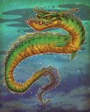

In Canadian folklore, Cressie is the nickname given to an eel-like lake monster said to reside in Crescent Lake, Robert's Arm, Newfoundland and Labrador, Canada. The name is a portmanteau of Crescent Lake and Nessie, the nickname given to the Loch Ness Monster. The monster has been described as resembling a large dark brown eel around 15 feet in length with a long, sleek body[1] and as "looking long and shiny, and having a fish-like head."[2] Claims of Cressie being sighted began in the 1950s, and continue to the present day.
Though there are reported sightings of Cressie as early as the 1950s, some have linked the legends to earlier Indigenous legends of the woodum haoot ("pond devil") or haoot tuwedyee ("swimming demon"), however others caution that this attribution has seemingly been copied from source to source without any verification of its connection to Cressie or the area of Newfoundland and Labrador in which Cressie is found. There have been no photographs of Cressie, and all information relies on local oral history. According to local folklore, an elderly resident of Robert's Arm known as Grandmother Anthony was startled while berry-picking by a giant serpent in the lake. In one of the earliest dated sightings in the 1950s, two woodsmen were on the shores of the lake when they noticed an upturned boat, and fearing for its occupants, they hurried towards it. However, as they approached, the boat turned out to be something large and slick which slipped below the waters of the lake. A local resident reported a slim, black shape rise five feet from a patch of churning water before sinking out of sight, in early spring 1990. On July 9, 1991, Fred Parsons and his wife reported seeing a large snakelike creature swimming in Crescent Lake. He described it as a long, sleek body without a significantly large head, which was laying level with the water. In September of that same year, a resident of Robert's Arm was returning to town when he noticed a disturbance on the surface of the lake. As he watched, the object dropped beneath the surface and then rose again. He described it as "a black, fifteen foot long shape pitching forward in a rolling motion much as a whale does but with no sign of a fin." It sank out of sight and did not reappear. There were several sightings in 1995, and a summer student crew working on the boardwalk along the lake spotted the monster in 2000. During the summer of 2003, several town residents say they saw the creature swimming after at least a year with no reports, which had led some residents to speculate whether Cressie had died.